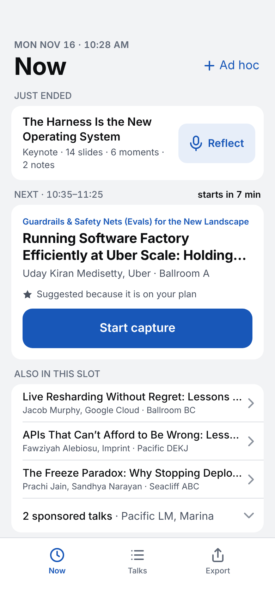
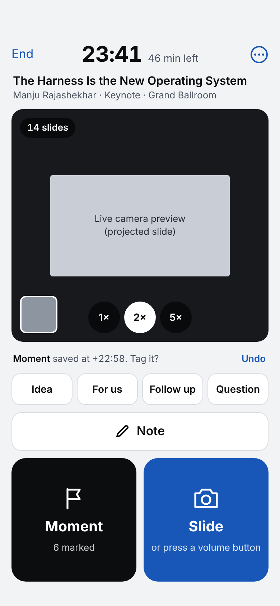
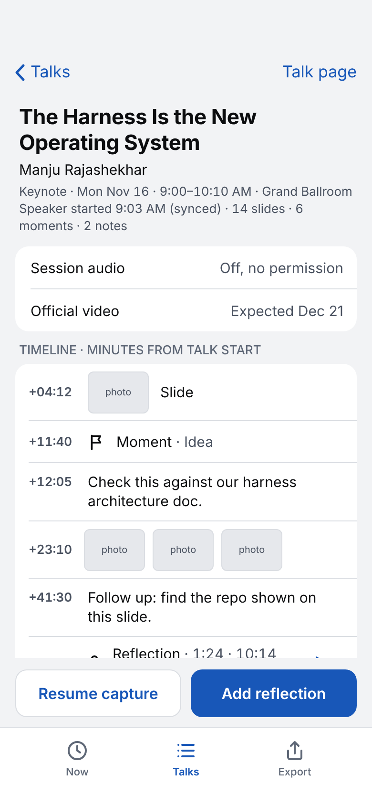
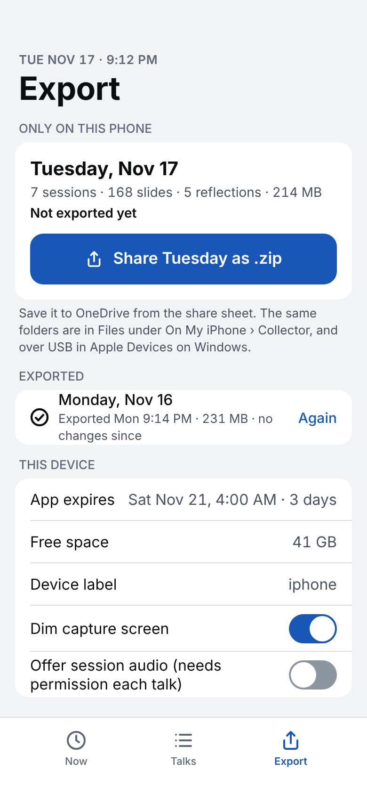
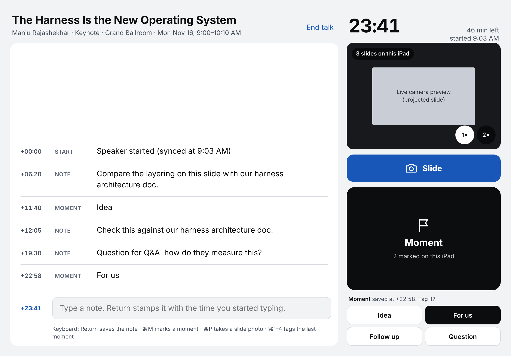

Capture the talk. Brief the team.
An offline iPhone and iPad app that collects slide photos, moment markers, notes and your own voice reflections, plus a Claude Code pipeline that turns them into cited briefs your team can read and act on.
The phone collects. Claude does the thinking later.
During a talk you should be listening, not typing. The app takes one tap per capture and stamps everything with the time from the talk's start. Research, synthesis and writing happen afterwards on your PC, where every claim can be checked.
What it does
- Slide photos in one tap, stamped with the time into the talk.
- Moments mark "this matters", with optional Idea, For us, Follow up or Question tags.
- Notes are stamped when you start typing, which is when the thought happened.
- Reflections record your own voice between talks, prompted by three short questions.
- iPhone and iPad together: captures from both merge by talk and time.
What it deliberately doesn't
- Record sessions. QCon's terms forbid it. Official recordings arrive for ticket holders from Dec 21.
- Touch the network. No accounts, no sync, no cloud transcription.
- Transcribe or OCR on the device. That happens later on the PC.
- Rebuild the schedule app. InfoQ's app already does ratings and bookmarks.
- Publish anything you haven't reviewed. Private stays private.
Captures stay private until you approve each brief.
Three zones and one gate. Everything lands in a private vault on your PC. Only briefs you've reviewed cross into the shareable repo, and the official video later turns your moments into timestamps.
- CaptureOne bundle per talk per device, saved as you go.
- Ingest
ingest.pymerges devices into one timeline per talk. - EnrichSpeaker, company and repo research, cached and cited.
- BriefWhat it is, the evidence, and how your team could use it.
- PublishReviewed briefs only, behind a gate that blocks private material.
Built for one hand in a dark room.
Big thumb targets, a dim capture screen, and nothing to type unless you want to. The iPad puts notes first, with the camera and Moment button beside them.





From a Windows PC to the app on your phone.
One-time toolchain, then build and install. Plan on an evening. Full detail, including likely compile errors, is in BUILD.md.
- Clone the repo to
C:\devl\workspace\apple-capture(or anywhere; adjust paths). - Install WSL and usbipd. In an admin PowerShell in the repo folder:
powershell -ExecutionPolicy Bypass -File .\setup\windows\1-windows-setup.ps1Reboot if asked, open Ubuntu once to create a user, then run it again.
- Install Swift, xtool and the USB tools in Ubuntu:
cd /mnt/c/devl/workspace/apple-capture bash setup/windows/2-wsl-setup.sh - Download Xcode 27.1 (.xip) from developer.apple.com with a free Apple ID. xtool only uses it as an SDK source.
- Run
xtool setup: choose Password mode, sign in with your Apple ID and 2FA, then give it the .xip path, e.g./mnt/c/Users/<you>/Downloads/Xcode_27.1.xip. - Turn on Developer Mode on the iPhone: Settings › Privacy & Security. It restarts.
- Copy the app into Linux, where builds are much faster:
mkdir -p ~/ios rsync -a --exclude .build --exclude xtool \ /mnt/c/devl/workspace/apple-capture/QConCollector/ ~/ios/QConCollector/ cd ~/ios/QConCollector - Set your bundle ID once in
xtool.yml, e.g.com.yourname.qconcollector. Changing it later makes a new, empty app. - Compile without a device until it builds:
xtool dev build. - Attach the phone. Plug in, unlock, and leave this running in an admin PowerShell:
.\setup\windows\3-attach-iphone.ps1. In Ubuntu,ideviceinfoshould print your device. - Install:
xtool dev. Tap Trust on the phone, then Settings › General › VPN & Device Management › your Apple ID › Trust. - Rehearse a fake 10-minute talk and check Files › On My iPhone › Collector. Repeat for the iPad.
Free Apple ID builds expire 7 days after install. Reinstall with xtool dev the morning you leave so the app lasts the whole event, and don't run xtool setup again while away.
A day with the collector.
Star your plan in the Talks tab, then let the Now screen pick the right talk each slot.
- Start capture from Now. Tap Sync start when the speaker actually begins.
- Slide for any slide worth keeping; Moment when something matters. Tag it in the next five seconds if you like.
- Note for a thought in your own words. It's stamped when you start typing.
- Reflect on the talk that just ended: what was the claim, what would we do with it, who should hear it. Thirty seconds is enough.
- Export the day as a zip and save it to OneDrive from the share sheet. That's your backup.
No app? The same pipeline accepts Camera photos, Voice Memos and an Action Button Shortcut that logs moments. See "Fallback" in BUILD.md.
Turn captures into briefs with Claude Code.
Open qcon-pipeline/ in Claude Code. Each command has a narrow contract and writes only where it should.
# one-time, in WSL
cd qcon-pipeline && pip install -r requirements.txt && python3 -m pytest -q
cp templates/lenses.example.yaml vault/lenses.yaml # then make the lenses yours
# put the day zips in inbox/, then in Claude Code:
/qcon-ingest # merge devices, number slides, transcribe reflections
/qcon-read all # slides to text
/qcon-enrich all # speakers, companies, repos, cached and cited
/qcon-brief all # one brief per talk, then a fresh-context claim check
/qcon-themes # cross-talk themes, actions, trip summary
/qcon-publish all-reviewed # reviewed briefs only, into kb/, never pushed for you
# from Dec 21, when the official videos are up
/qcon-reconcile <talk_id> # moments become video timestampsBuilt to respect the event and the speakers.
- Photos yes, recordings no
- QCon's terms allow your own still photos and forbid recording sessions:
"You are not permitted to record or otherwise make your own video of any session."
Session audio is a stub in the app, for talks where a speaker or organizer explicitly says yes. - Every sentence is sourced
- Briefs mark each claim as a slide, note, moment, reflection, a cached public source, or "Our read". A separate checker fails anything unsupported.
- Private by default
- Raw captures, audio and transcripts stay in the git-ignored vault. Unconference and hallway content never reaches the shared repo, per the Code of Conduct.
- Link, don't copy
- Official videos are streaming-only for ticket holders, so briefs link to them with timestamps. Only slide photos a brief cites are published, downscaled and credited.
What's where.
| Path | What it is |
|---|---|
| QConCollector/ | The iPhone and iPad app: an xtool SwiftPM project, SwiftUI, iOS 17+. |
| qcon-pipeline/ | Ingest, publish gate, schedule builder, Claude Code commands and agents, tests. |
| setup/windows/ | WSL, Swift, xtool and USB passthrough scripts for a Windows PC. |
| BUILD.md | Evening-by-evening build plan, exact commands, likely compile errors, the no-app fallback. |
| architecture.md | The full design: bundle format, synthesis rules, knowledge repo, risks. |
| design-spec.md | Screen-by-screen UI specification. |
| docs/research/ | The QCon logistics and iOS feasibility research behind the design. |
| designs.html | All six screens in one page. |